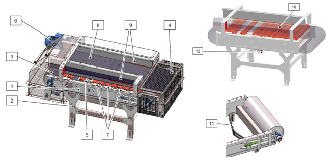
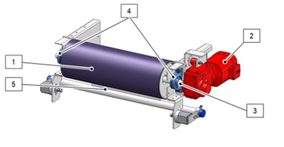
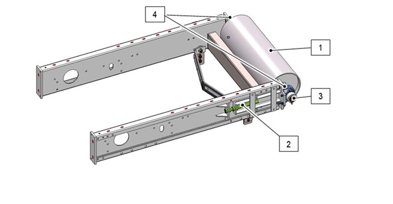
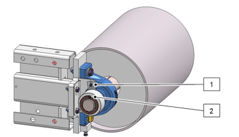
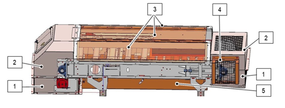
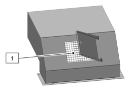

Overview of the Metering Conveyor Scale
SBS-OP-136A
Revised: 2024-01-30
Purpose/Application
Provides an overview of the metering conveyor scale.
PPE Required
General
Bump cap/hard hat, safety glasses with foam liner, proper hearing protection, fire-resistant long sleeved shirt, safety toe boots.
Required for Specific Tasks
Respirator or PAPR in case of a toxic batch material spill.
Safety Hazards
Respirable Crystalline Silica
Crystalline silica has been classified as a human lung carcinogen. Breathing crystalline silica dust can cause silicosis, which in severe cases can be disabling, or even fatal.

Safety Controls
- The Hazard Communication Standard (HCS) requires chemicals to have Safety Data Sheets (SDS). Use the SDS for chemicals listed in this SOP for additional hazards, first aid measures, toxicological information, accidental release measures, and handling/storage of the chemical.
- Review the Emergency Action Plan before performing work.
Equipment Needed
Access to the metering conveyor scale control screen and power switch.
Comments
Before starting work:
- Read this document thoroughly.
- Complete the required training.
- Wear the required PPE.
This SOP uses Streator screens and images.
- SBS-ET-136 Troubleshooting the Metering Conveyor Scale
- SBS-MR-136 Metering Conveyor Scale Maintenance
- Vendor manual in the Resources library
Metering Conveyor Scale Components
The metering conveyor scale is a continuous conveyor used to transport and weigh batch material. The metering conveyor scale runs automatically, and a control system controls and monitors all machine functions.
The metering conveyor scale consists of a belt frame (1) and a support structure (2). The drive station (3), tensioning station (4), weighing unit (5), drive unit (6) and a number of roller stations (7) are fastened to the belt frame. A conveyor belt (8) is tensioned between the drive and tensioning pulleys.
The conveyor belt is guided over the tensioning pulley and drive pulley, and transports the batch material. Feed units at the loading point transport the material to the conveyor belt. The conveyor belt transports the material to the delivery point.
The guide gutters (9) guide the material on the conveyor belt. The guide gutters are equipped with rubber seals which prevent the material from falling off the conveyor belt. Idler rollers (10) support the conveyor belt together with the material.
A belt cleaner (e.g. belt scraper) (11) is located after the delivery point. This cleans any adhering material from the conveyor belt. The conveyor belt is guided back to the loading point via return rollers (12). The transported material is weighed during operation by the weighing unit and the trans- ported quantity of material is registered.

Drive Station
The drive station causes the conveyor belt to move via the drive pulley (1). A drive unit (2) is connected to the metering conveyor scale via the drive shaft (3) and is thus able to transfer its rotary movement to the metering conveyor scale. The drive unit can be optionally equipped with an anti-reversing mechanism that prevents the drive unit or conveyor belt from running backwards. The drive shaft is mounted on two pedestal bearings (4) in such a way that it can rotate. A scraper (5) cleans material contaminations from the drive pulley in order to prevent any damage to the conveyor belt.

Tensioning Station
The conveyor belt is tensioned and guided via the tensioning station. The tensioning pulley (1) is moved in a straight line via tensioning spindles (2), thereby increasing or reducing the tension of the conveyor belt. The tensioning pulley is mounted on two pedestal bearings (4) by means of a shaft (3) and is able to rotate. A rotary survey is mounted at the end of the shaft.

Rotary Survey
The rotary survey sends pulses to the controller to indicate that the tensioning pulley is turning. These pulses are evaluated by the PLC or a control device (except in manual operation). The rotary survey is an incremental encoder (inductive proximity switch) (1) and cam switch (2) that are mounted at the end of the tensioning pulley shaft.
If the pulses are not received, the metering conveyor scale will be switched off after a time delay to protect it against damage.
- Identify the reason why the rotary survey triggered.
- Eliminate the reason that caused the rotary survey to trigger.
- Acknowledge the error message at the control cabinet (blue pushbutton).

Protective Housings and Covers
The drive and tensioning station are covered by hood constructions (1 and 2). The idler rollers and guide gutters are covered by protective covers (3). The ends of the tensioning pulley shaft are covered by a protective grille (4). The area around the bottom belt has a bottom belt cover (5).

A protective grille with a 30 x 30-mm mesh is attached to the control opening in the drive station cover to prevent anyone from reaching into the metering conveyor scale. The control opening is located in the top hood of the metering conveyor scale drive station to permit the safe observation of the machine’s movements during operation.
When the control opening is open, there is a danger of injury, especially to the eyes. Wear protective glasses. Keep the control opening closed except when looking in..

Operating Modes
Automatic mode is the default mode for operation. In automatic mode, all the operating sequences of the metering conveyor scale run automatically. All current data, messages, errors and other information are displayed via the user interface.
The metering container scale can be operated manually for maintenance purposes by using the user interface at the control cabinet. This operating mode is intended for emergencies and for maintenance and repair work. There are no locking mechanisms in manual mode.
Approval
|
Person |
Role |
|---|---|
|
Michael Hu |
Process Development Squad Lead |
|
Johnathan Fisher |
Process Analyst |
|
David Jepsen |
Melter Training Specialist |
|
Phillip Wilson |
EHS Continuous Improvement Manager |
Revision History
|
2024-01-30 |
Approved by Michael Hu, Process Development Squad Lead |
|
Original Issue |